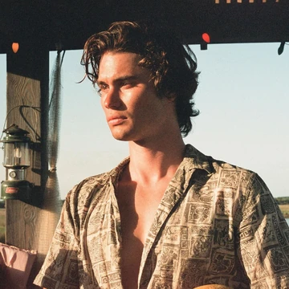
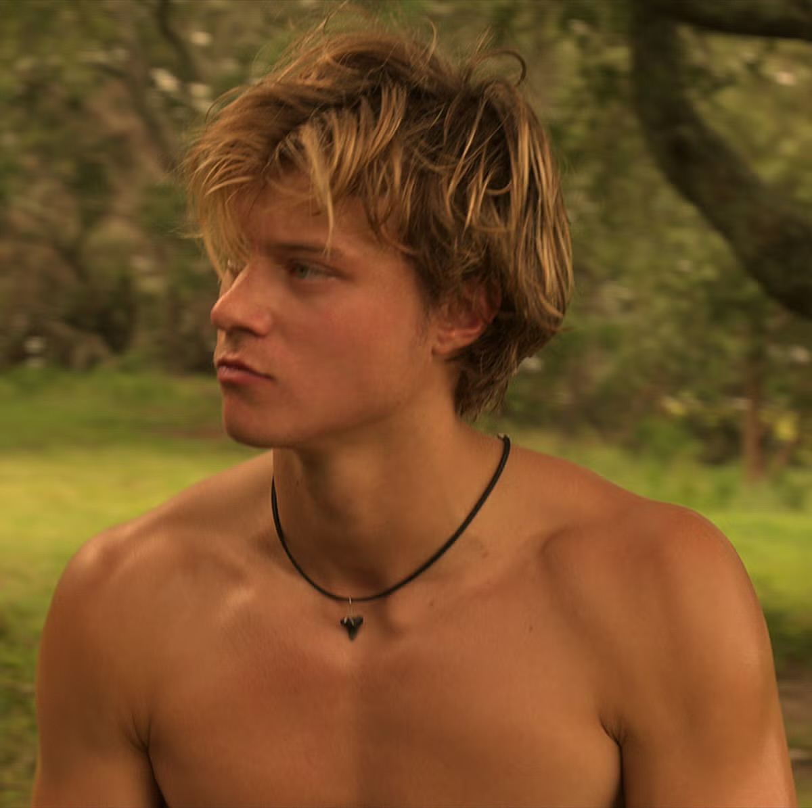
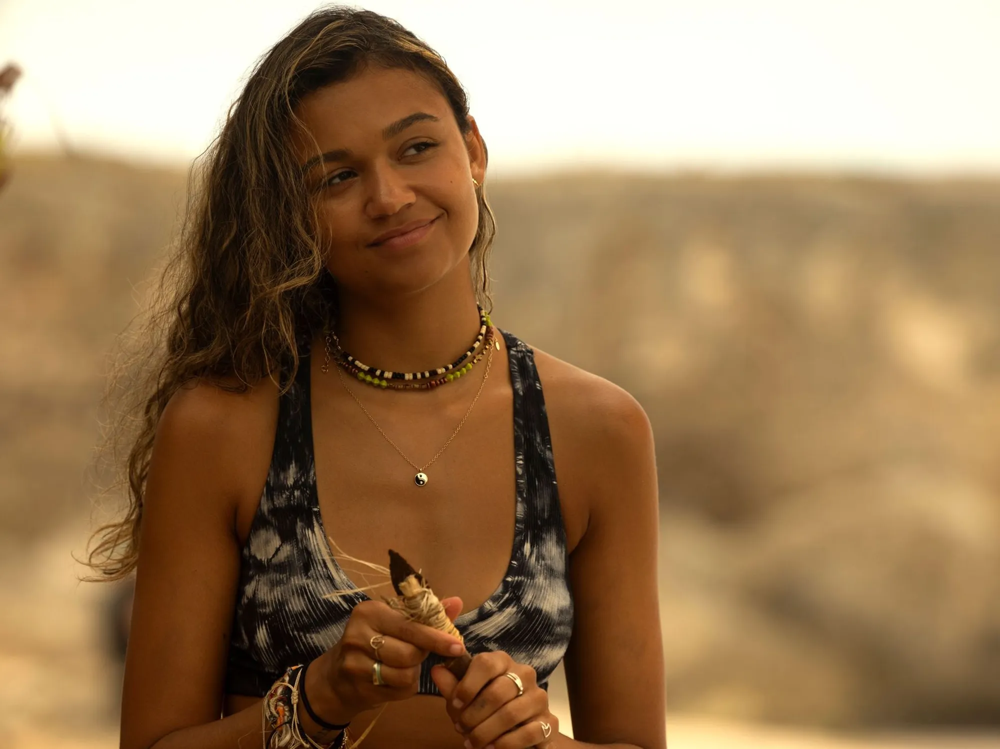

Temporada 1
Todo empieza con un motor de avión hundido y la búsqueda del oro del Royal Merchant.
Cuatro amigos del lado humilde de la isla, un mapa viejo y una familia rica que también quiere el tesoro.
En Outer Banks la gente se divide entre los Pogues, que viven del lado trabajador, y los Kooks, que tienen las casas grandes y los clubes privados. La serie sigue a un grupo de Pogues que se mete en una búsqueda de tesoro con todo en contra.
Todo empieza con un motor de avión hundido y la búsqueda del oro del Royal Merchant.
La cruz de Santo Domingo lleva a los Pogues hasta las Bahamas.
La isla de Kildara y una ciudad perdida cambian las reglas del juego.


